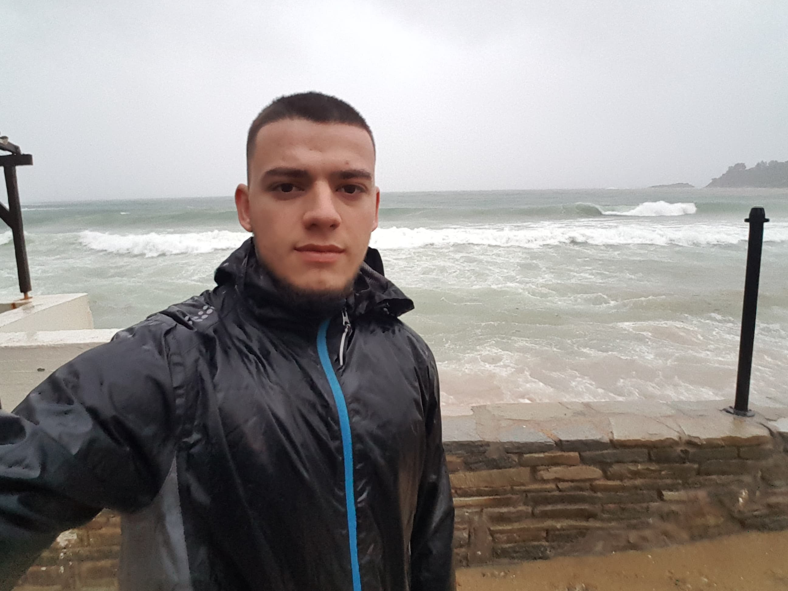
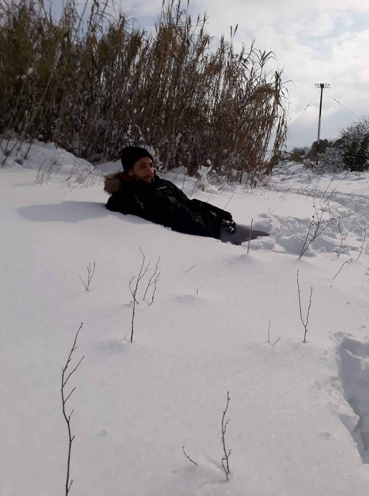

Αρχική
Τα μέλη της S.P.G.© Corp:
- Πάρης Ζωηρός(4217)
- - Ο Πάρης κατέχει βασικές γνώσεις στις γλώσσες προγραμματισμού C++, Python, HTML και προχωρημένες γνώσεις στην Java και στην Oracle SQL.
Κατάγεται απο το Σιδηρόκαστρο Σερρών και κατοικεί στην καβάλα

Στέφανος Μιχελάκης(4149)
- - Ο Στέφανος κατέχει και αυτός βασικές γνώσεις στις γλώσσες προγραμματισμού C++, Python, HTML και προχωρημένες γνώσεις στην Java και στην Oracle SQL
Κατάγεται απο τα Χανιά αλλα είναι μεγαλωμένος στην Θεσσαλονίκη και κατοικεί στην Καβάλα

- Γιάννης Γισγάκης
- - Ο Γιάννης γνωρίζει βασικές λειτουργίες και κώδικες για τις γλώσσες C++, Python, HTML και κατέχει προχωρημένες γνώσεις στην Java και στην Oracle SQL
Κατάγεται απο την Μεγάλη Παναγία και κατοικεί στην Καβάλα